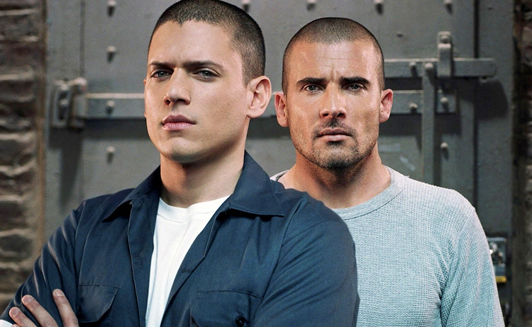

Michael Scofield - An unreal genius
Vượt ngục cũng vậy. Nhưng khi đó thực sự chỉ là một ít chi tiết và sự ấn tượng về Michael Scofield
Created Jul 26, 2020 - Last updated: Jul 26, 2020
Khi mình còn nhỏ, những bộ phim VTV phát vào khung giờ 6h hay 22h là cả một kí ức. Vượt ngục cũng vậy. Nhưng khi đó thực sự chỉ là một ít chi tiết và sự ấn tượng về Michael Scofield. Suốt mấy năm trời, mình không có hứng thú về phim vì nghĩ không thu được nhiều từ phim; nhưng khi đến mùa hè ở nhà và chưa biết làm gì thì việc đầu tiên là xem phim. Vượt ngục được chọn vì sự tò mò về Michael. Kí ức khi đó là một thanh niên xăm trổ và thông minh.
Thiên tài
Michael Scofield là một kĩ sư kết cấu, công việc phân tích tính toán sức chịu đựng của các công trình xây dựng. Michael có một người anh là Lincoln bị kết tội oan, sắp sửa bị tử hình ở nhà tù Fox River; và Michael quyết định đưa mình vào tù và “break him out”. Series phim là câu chuyện về vượt ngục, trốn chạy, tìm kiếm sự tự do của Michael và Lincoln. Một series phim hành động, tâm lý, gia đình và không có thật mang lại nhiều hơn là sự thích thú cho một đứa trẻ. Đó còn là sự ấn tượng về phong cách của Michael Scofield và những gì học được từ Michael.
Chi tiết nhất
Michael Scofield là một thiên tài. Anh có sự hiểu biết cực kì sâu rộng về mọi thứ và cách chúng vận hành. Từ chuyên ngành là kết cấu xây dựng đến hóa học, điện tử, xã hội, tội phạm… và sự tính toán chuẩn xác. Với kiến thức sâu rộng như vậy, người ta gọi đó là thông minh. Thông minh phải đi kèm với kiến thức, nếu không có kiến thức thì không có sự thông minh và có kiến thức rồi thì phải vận dụng nó thì mới là thông minh. Đấy chính là đầu óc của một kĩ sư. Thầy mình có hỏi mọi người như thế này: “Điều khác biệt giữa một kĩ sư và những người còn lại là gì ?”. Mình nghĩ đó là sự tính toán. Sự tính toán là khả năng vạch ra các hướng đi, kết cục có thể xảy ra và khắc phục. Michael có đủ tính chất như vậy, Michael hiểu được cách vận hành từng bước cơ bản nhất và mọi chi tiết phải được tính toán kĩ lưỡng từ con ốc vít đến cái dây để vượt ngục.
Tầm nhìn
Người có khả năng tổng quát hóa được sự việc, nhận biết được mọi thứ xảy ra hay nói cách khác là có tầm nhìn ở trên cao là người giỏi nhất. Giống như trong bóng đá, điểm khác biệt rõ rệt ở chơi game bóng đá với trực tiếp chơi bóng đó là tầm nhìn, khi chơi game ta có thể quan sát toàn bộ sân để điều chỉnh nhưng chỉ là góc nhìn one player khi chơi bóng ngoài đời; rõ ràng sẽ gây khó khăn ở quyết định chuyền sút hay đi bóng ở cầu thủ. Đó là lí do “nhìn thì dễ vào làm mới khó “. Có được tầm nhìn tốt và khả năng đọc trận đấu tốt sẽ giúp bạn thành một cầu thủ xuất sắc. Michael là người như vậy, anh có tầm nhìn rộng hơn và cao hơn nhiều so với các nhân vật còn lại. Luôn đi trước một bước và luôn bất ngờ.
Kết
Michael là sự kết hợp của sự chi tiết và sự tổng quát. Khi Michael có được hai thứ như vậy thì anh là thiên tài và không thể bị đánh bại. Đó cũng là sự phấn đấu đến sự hoàn hảo trong mọi thứ. Sự khác biệt của Michael và phần còn lại nằm ở câu nói “Everything goes to plan”. Quả là một thiên tài được điện ảnh dựng lên, phim ảnh đôi khi tạo hình nhân vật, rồi người xem đánh giá họ và bắt chước họ. Khá hiệu quả, tuy vậy bắt chước một Michael ngoài đời thực là khó; hướng đến những thứ Michael có thì tốt hơn. Hmm bài viết bỏ qua đi những tình tiết về tình yêu, gia đình vì mình không biết viết về điều đó và chưa ấn tượng lắm. Series phim bánh cuốn và nhiều drama kịch tính phết.
Những ngày hè tạm rời xa sách vở, làm bạn với phim ảnh xem ra cũng thú vị.